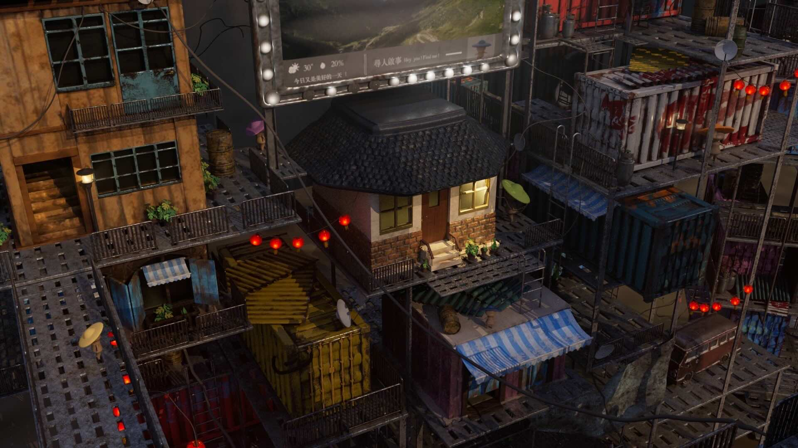

每張圖都有一個帶著藍色帽子的小人偶，找找看在哪裡吧！
Concept
色彩鮮艷有風格的，細節豐富
以貨櫃屋為主角，設計出破舊風格的未來社區，靈感來自於我讀過的書，並翻拍成電影的『一級玩家』。
Process
設計草圖
以不同顏色的貨櫃來搭建場景。
主建築＿小吃店設計
酒吧設計

未來，是否總是令人嚮往？科技進步、環境宜人，彷彿一切都朝向理想前進；又或許未來因人類的過度開發與資源濫用，導致土地荒蕪，我們只能住在層層堆疊的貨櫃屋裡？
以貨櫃屋為主角，設計出破舊風格的未來社區，靈感來自於我讀過的書，並翻拍成電影的『一級玩家』。
以不同顏色的貨櫃來搭建場景。